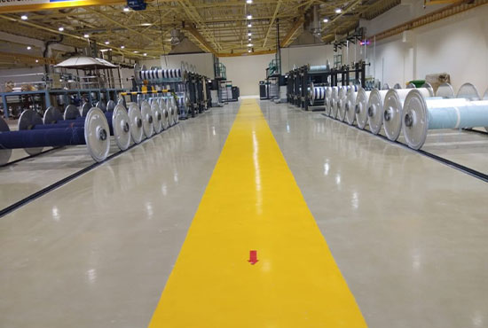

Experience peace of mind with our ESD flooring service, designed to control electrostatic discharge and safeguard sensitive environments. Trust Floor Tech for reliable solutions that prioritize safety and protection against static electricity
Static control flooring is defined as a flooring system that can drain static charges by grounding personnel, equipment or other objects contacting the floor surface or that controls the generation and accumulation of static charges. There are two categories according to ASTM F-150-98 : Conductive & Static dissipative.
Conductive Floor has a resistance of 2.5 x 104–106 ohms per 3 ft. It can drain static charge dissipating a 5000-volt charge to zero in 0.05 seconds.
Static Dissipative floor has a resistance of 106 -109 ohms per 3 ft. It can drain static charge dissipating a 5000- volt charge to zero in less than 0.2 seconds.

Features :
Higher Mechanical Properties Than Concrete.
Durable
Constant Level Of Conductivity
Low Maintenance
Superior Chemical Resistance
Seamless
Available In Attractive Shades
Available In Conductive And Static-dissipative Forms